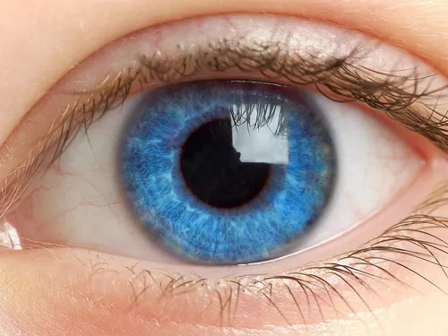

현대 청소년은 스마트폰, 태블릿, 컴퓨터 등 다양한 디지털 기기를 장시간 사용하는 환경에 놓여 있다. 이러한 환경은 눈의 피로를 유발할 뿐만 아니라, 장기적으로는 시력 저하와 같은 시각 기능 이상으로 이어질 수 있다. 특히 근거리 작업이 지속될 경우, 눈의 조절 기능을 담당하는 모양체 근육이 과도하게 긴장하게 되며 이는 안구 피로와 두통, 집중력 저하를 유발하는 주요 원인이 된다. 의공학적 관점에서 보면, 눈은 단순한 감각 기관이 아니라 정밀한 광학 시스템이다. 각막과 수정체는 외부에서 들어오는 빛을 굴절시켜 망막에 정확하게 상을 맺도록 하는 역할을 수행한다. 그러나 장시간 동일한 거리의 화면을 응시하면 초점 조절 기능이 고정되면서 눈의 유연성이 감소하게 되고, 이는 일시적인 시야 흐림이나 장기적인 시력 변화로 이어질 수 있다. 이를 예방하기 위한 가장 효과적인 방법 중 하나는 ‘20-20-20 규칙’이다. 이는 20분마다 20초 동안 약 6m 이상의 먼 곳을 바라보는 습관으로, 눈의 조절 근육을 이완시켜 피로를 줄이는 데 도움을 준다. 또한, 의식적인 눈 깜빡임은 눈물막을 안정화시켜 안구 건조를 방지하는 데 중요한 역할을 한다. 실제로 디지털 기기를 사용할 때 눈 깜빡임 횟수는 평소보다 절반 이하로 감소하는 것으로 알려져 있다. 조명 환경 또한 중요한 요소이다. 지나치게 밝거나 어두운 환경은 동공의 지속적인 수축과 확장을 유발하여 눈의 피로를 증가시킨다. 따라서 화면 밝기와 주변 조명을 적절히 조절하여 눈에 가해지는 부담을 최소화해야 한다. 결론적으로, 눈 건강은 단순한 생활 습관의 문제가 아니라, 인간의 시각 시스템과 관련된 과학적 이해를 바탕으로 관리해야 하는 영역이다. 작은 습관의 변화—짧은 휴식, 적절한 조명, 올바른 거리 유지—는 장기적으로 시각 건강을 지키는 데 매우 중요한 역할을 한다.
← 돌아가기